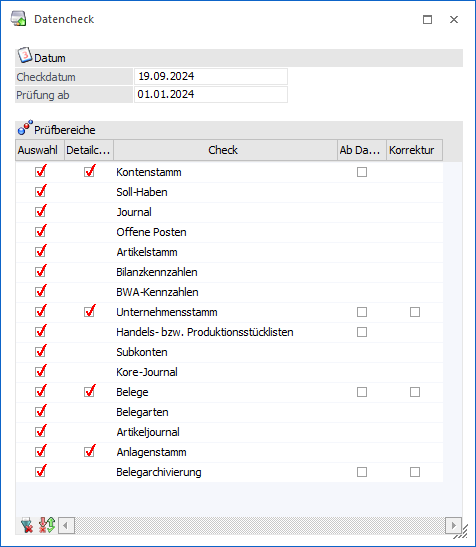
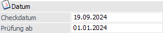
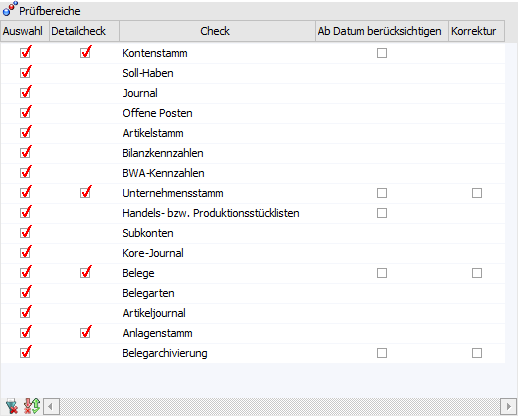
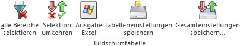
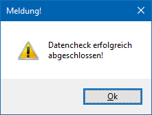
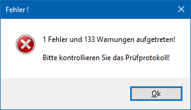
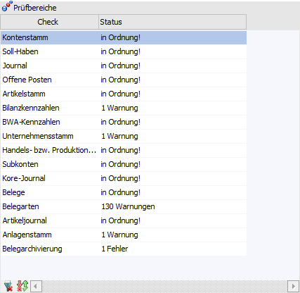
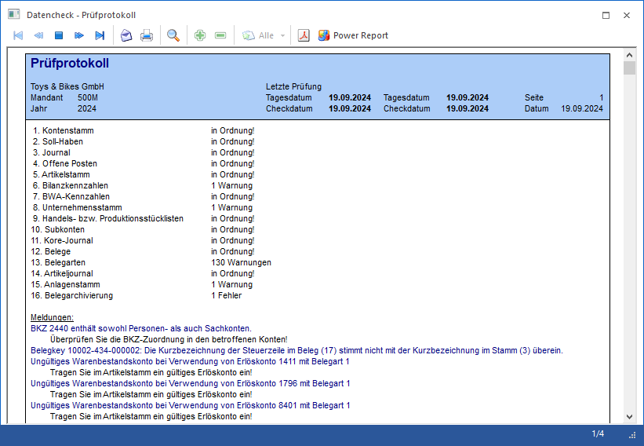
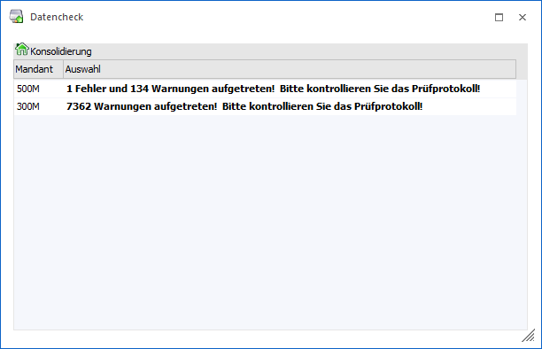
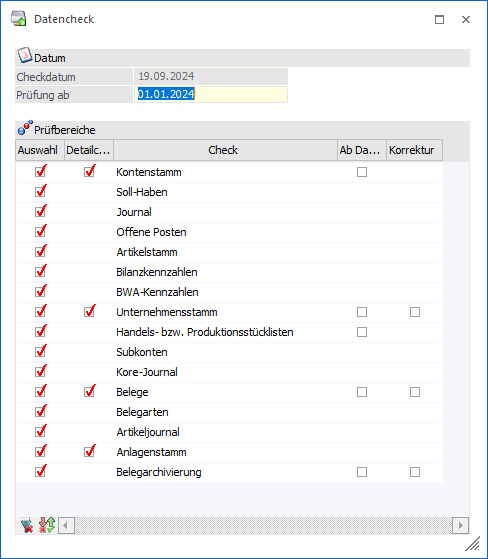

Das Programm "Datencheck", welches über den Menüpunkt…
1 WinLine START
1 Abschluss
1 Daten-Check
… aufgerufen wird, prüft die Daten des Mandanten bezüglich ordnungsgemäßer Datenaufzeichnung. Die Funktionsfähigkeit des Datenstandes kann u.a. durch folgende Einflüsse beeinträchtigt werden:
ü Stromausfall
ü Unsachgemäßes Handling des Programms, z.B. Ausschalten des Gerätes während der Verarbeitung
ü Fehlerhafte Sektoren auf der Platte
ü Hauptspeicher-Fehler
Achtung
Diese Datenprüfung sollte unbedingt täglich durchgeführt werden. Nur sie gewährleistet, dass der Datenstand voll funktionsfähig ist. Wird der Prüflauf vernachlässigt, besteht die Gefahr, dass ein aufgetretener Fehler unbemerkt bleibt und ordnungsgemäße Sicherungsdatenstände durch fehlerhafte Datensicherungen überkopiert werden.

Folgende Einstellungen stehen beim Datencheck zur Verfügung:
Datum

Ø Checkdatum
An dieser Stelle wird ein Datum in dem Format TT.MM.JJJJ hinterlegt, wobei das aktuelle Systemdatum vorgeschlagen wird. Dieses Datum wird im Prüfprotokoll angedruckt.
Hinweis
Durch Drücken der Taste F3 wird das aktuelle Systemdatum gesetzt.
Ø Prüfung ab
Mit dem einzugebenden Datum kann festgelegt werden, dass in den Prüfbereichen "Kontenstamm", "Unternehmensdatum", "Handels- bzw. Produktionsstücklisten", "Belege" und "Belegarchivierung" nur Daten ab diesem Datum berücksichtigt werden. Hierzu muss zusätzlich noch die Checkbox "Ab Datum berücksichtigen" in der Tabelle aktiviert werden.
Hinweis
Die Prüfung erfolgt bei dem Bereich "Kontenstamm", sowie bei "Unternehmensstamm", "Belege" und "Belegarchivierung", auf die Datümer "Erstanlage" und / oder "Datum der letzten Änderung" und bei "Handels- bzw. Produktionsstücklisten" auf das "Lieferdatum".
Tabelle "Prüfbereiche"

In der Tabelle werden die einzelnen Prüfbereiche aufgelistet. Dabei kann pro Bereich bestimmt werden, ob ein Datencheck vorgenommen werden soll.
Ø Auswahl
Durch Aktivierung bzw. Deaktivierung der Checkbox kann bestimmt werden, ob ein Datencheck für den entsprechenden Bereich vorgenommen werden soll.
Ø Detailcheck
Bei den Bereichen "Kontenstamm", "Unternehmensstamm", "Belege" und "Anlagenstamm" ist es möglich, über die Aktivierung der Checkbox, einen detaillierteren Datencheck durchführen zu können.
Ø Check
In dieser Spalte werden die einzelnen prüfbaren Bereiche dargestellt.
|
Bereich |
Checkumfang |
|
Kontenstamm |
Sonderzeichen |
|
Kontenstamm => Detailcheck |
Plausibilitätsprüfung, ob die im Kontenstamm enthaltenen Daten auch angelegt sind (Kundengruppe, Preisliste etc.) |
|
Soll/Haben |
Summenkontrolle (Monatssummen, Jahressumme, Saldo) Soll- / Haben-Gleichheit, Salden-Gleichheit Hauptbuch-/Nebenbuchkonten + direkte Buchung |
|
Journal |
Sonderzeichen, zerstörte Datensätze, es wird geprüft, ob das Steuerkennzeichen der Journalzeile mit dem Steuerkennzeichen der Konten übereinstimmt |
|
Offene Posten |
Überprüfung auf Sonderzeichen / Verknüpfung (Zahlungen zu Fakturen), Plausibilität |
|
Artikeldatei |
Plausibilitätsprüfung, ob die im Artikelstamm enthaltenen Daten auch angelegt sind (Erlöskonto, Artikelgruppe etc.). Des Weiteren, ob auch alle Artikel in der Artikelmatchtabelle enthalten sind. |
|
Bilanzkennzahlen |
Es wird geprüft, wie viele BKZ´s auf inaktiv gesetzt wurden, bzw. ob eine BKZ, die nicht angelegt wurde, bei einem Konto hinterlegt ist und ob Bilanzkennzahlen gleichzeitig bei Sach- und Personenkonten hinterlegt sind. Hauptbuchkonten werden nicht berücksichtigt. |
|
BWA-Kennzahlen |
Es wird geprüft, bei welchen Konten keine BWA hinterlegt ist und wo BWA´s hinterlegt sind, die nicht angelegt wurden. |
|
Unternehmensstamm |
Es wird geprüft, ob die in den Steuerzeilen
hinterlegten Konten angelegt sind und ob bei allen Steuerzeilen alle
Konten eingetragen sind. |
|
Handels- bzw. Produktionsstückliste |
Es wird geprüft, ob die Verweise zwischen Beleg und
Handelsstückliste in Ordnung sind und ob es keine Produktionsaufträge mit
doppelten Zeilen gibt. |
|
Subkonten |
Es wird geprüft, ob alle Subkonten ordnungsgemäß angelegt sind. |
|
Korejournal |
Es wird geprüft, ob die vorhandenen KORE-Journalzeilen ordnungsgemäß gespeichert sind. |
|
Belege |
Es werden folgende Punkte geprüft:
ü gibt es Belegköpfe bei denen die Laufnummer im Beleg-Key nicht mit der Laufnummernspalte übereinstimmt ü gibt es Belegzeilen bei denen die Laufnummer im Beleg-Key nicht mit der Laufnummernspalte übereinstimmt ü gibt es Belegzeilen zu denen kein Belegkopf vorhanden ist ü sind doppelte Auftrags-, Lieferschein-, und Fakturennummern vorhanden |
|
Belege => Detailcheck |
Mit Aktivierung dieser Option wird bei Aufträgen mit
aufgeteilten Hauptartikeln geprüft, ob die bereits gelieferte Menge des
Hauptartikels mit der Menge der Ausprägungen übereinstimmt. |
|
Belegarten |
Es wird geprüft, ob ungültige Kombinationen von Buchungsart und Buchungsschlüssel in den Belegarten verwendet werden. Mögliche Fehlerfälle sind:
ü in der Belegart sind Buchungsart FA und Buchungsschlüssel P eingetragen; FA ist in den Lagerbuchungsarten aber mit Buchungsschlüssel V angelegt ü in der Belegart sind Buchungsart FL und Buchungsschlüssel Z eingetragen; im Datenstand ist aber bereits eine Lagerbuchungsart FL mit dem Code L+ vorhanden
Des Weiteren wird geprüft ob sich bei der Maskierung Erlöskonto/Soll- bzw. Haben, Erlöskonto/Warenbestandskonto oder Erlöskonto/Wareneinsatzkonto gültige Konten ergeben. |
|
Artikeljournal |
Es werden folgende Punktegeprüft:
ü stimmt die letzte Buchungsnummer in der neuen Tabelle mit der letzten Buchungsnummer im Artikeljournal überein (ggfs. mit Korrektur) ü sind Buchungsnummern doppelt vergeben worden ü sind Buchungsnummern mit Wert 0 vorhanden |
|
Anlagenstamm |
Es werden folgende Felder geprüft:
ü Kennzeichen ü AfA-Art ü AfA-Regel ü Abgangsregel ü Inbetriebnahmedatum ü Nutzungsdauer ü Anlagengruppe ü Konten (Lieferanten-, FIBU-, Wertberichtigungs-, AfA-, Perioden-AfA, Sonder-AfA-, Perioden-Sonder-AfA-Konto) ü Kostenstelle, Kostenart und Kostenträger ü Zusatzfelder-Verweise |
|
Anlagenstamm => Detailcheck |
Es werden zusätzlich die handelsrechtlichen Daten geprüft. |
|
Belegarchivierung |
Es werden alle Belege mit Autoarchivverweis geprüft und auf folgendes kontrolliert:
ü handelt es sich bei dem Archiveintrag um einen FAKT-Beleg ü handelt es sich bei dem Archiveintrag um einen Beleg mit der richtigen Belegstufe gemäß PDI (d.h. Archiveintrag eines Angebots muss z.B. PDI "P02W41" aufweisen) |
Ø Ab Datum berücksichtigen
Wenn diese Checkbox aktiviert wird, dann wird bei dem Datencheck das Datum unter "Prüfung ab" berücksichtigt (nähere Informationen siehe Feld "Prüfung ab").
Ø Korrektur
Diese Option steht für die Bereiche "Unternehmensstamm", "Beleg" und "Belegarchivierung" zur Verfügung und führt folgendes durch:
ü Unternehmensstamms
ü Es wird die Kurzbezeichnung der Steuerzeile in den Belegmittelteilszeilen korrigiert, wenn diese nicht mit der der internen Steuerzeilennummer übereinstimmt
ü Belege
ü Bei der Prüfung, ob die bereits gelieferte Menge der Ausprägungen mit dem Hauptartikel übereinstimmt, wird diese aktualisiert und ggfs. offene Aufträge erledigt
ü Bei der Überprüfung der Sortierungsnummer wird diese ggfs. geändert, falls sie nicht vorhanden ist oder doppelt im Beleg vorkommt
ü Doppelte Zeilennummern werden neu durchnummeriert
ü Belegarchivierung
ü Es wird der Autoarchivverweis bei all jenen Belegen entfernt, bei denen kein gültiger Autoarchiveintrag vorhanden ist
Hinweis
Wenn die Checkbox nicht aktiviert ist, dann wird im Protokoll für solche Belege ein Fehler ausgewiesen.
Tabellenbuttons

Ø alle Bereiche selektieren
Durch Anwahl dieses Buttons werden alle Prüfbereiche selektiert, wobei die Checkbox "Ab Datum berücksichtigen" davon nicht betroffen ist.
Ø Selektion umkehren
Durch Anklicken dieses Buttons werden alle vorgenommenen Selektionen in das Gegenteil umgewandelt - selektierte Einträge werden deselektiert, deselektierte Einträge werden selektiert. Die Checkbox "Ab Datum berücksichtigen" ist davon nicht betroffen.
Ø Ausgabe Excel
Durch Anwahl des Buttons "Ausgabe Excel" wird der Inhalt der Tabelle an Microsoft Excel übergeben.
Ø Tabelleneinstellungen speichern
Die Spalten einer Tabelle können grundsätzlich an beliebige Positionen verschoben, bzw. in der Breite entsprechend angepasst werden. Durch Anwahl des Buttons "Tabelleneinstellungen speichern" werden die Einstellungen benutzerspezifisch gespeichert und bei dem nächsten Aufruf des Programmpunktes wieder vorgeschlagen.
Ø Gesamteinstellungen speichern
Im Gegensatz zu "Tabelleneinstellungen speichern" können mit "Gesamteinstellungen speichern" mehrere Tabellenaufbauten gespeichert und nach Wunsch geladen werden. Zusätzlich werden Sonderfunktionen der Tabelle (z.B. "Spalte gruppieren") ebenfalls bei der Speicherung bedacht.
Buttons
Ø Ok
Durch Anklicken des Buttons "Ok" bzw. der Taste F5 wird der Datencheck gestartet. Vorgenommene Einstellungen (z.B. welcher Bereich geprüft werden soll oder Detailcheck aktiviert / deaktiviert) werden hierbei gespeichert und beim nächsten Aufruf dementsprechend wieder vorgeschlagen.
Hinweis
Während der Ausführung des Checks wird der aktuelle Status am Bildschirm angezeigt. Jeder Datenbereich, der erfolgreich durchgeführt wurde, wird mit der Information "In Ordnung" versehen.
Nach Beendigung des Datenchecks wird eine Meldung angezeigt, welche das Ergebnis der Prüfung bekannt gibt. Zusätzlich ist der Status in der Tabelle und dem Gesamtprüfprotokoll (ausgegeben in den Spooler bzw. direkt auf den Drucker) ersichtlich.
ü Meldung

bzw.
ü Tabelle "Prüfbereiche"

Hinweis
Wenn ein Datenbereich, der Warnungen, Fehler oder Korrekturen produziert hat, in der Statustabelle angewählt wird, dann ist die Anwahl des Buttons "Info" möglich (alternativ kann gleich ein Doppelklick auf den Eintrag gemacht werden). Dadurch wird ein Prüfprotokoll des Prüfbereichs am Bildschirm ausgegeben, in welchem ersichtlich ist, welche Daten nicht in Ordnung sind und was ggfs. dagegen getan werden kann bzw. bereits getan wurde.
ü Prüfprotokoll

Hinweis
Im Prüfprotokoll, ist ersichtlich, welche Punkte beim Checklauf beanstandet wurden, wobei Warnungen bzw. Korrekturen in "blau" und Fehlermeldungen in "rot" dargestellt werden.
Unterhalb der Fehlermeldung erfolgt ein Hinweis, was im jeweiligen Fall zu tun ist, damit die Warnung oder der Fehler behoben werden kann.
Ø Ende
Durch Drücken des Buttons "Ende" bzw. de Taste ESC wird der Programmbereich geschlossen.
Ø Mandantenselektion
Dieser Button steht nur zur Verfügung, wenn in den Konsolidierungs-Einstellungen mehrere Mandanten ausgewählt wurden.
Durch Anwahl des Buttons öffnet sich ein Fenster, in welchem ausgewählt werden kann, für welchen Mandanten der Datencheck durchgeführt werden soll. Wurde die Selektion ausgewählt und mit "Ok" bestätigt, so wird der Datencheck mit den vorhandenen Einstellungen durchgeführt. Nach Abschluss des Datenchecks wird eine Tabelle mit dem Ergebnis der Datenprüfung angezeigt.

Ø Info
Die Anwahl dieses Buttons ist nur möglich, wenn ein Datenbereich, der Warnungen, Fehler oder Korrekturen produziert hat, nach dem Datencheck in der Statustabelle angewählt wird.
Durch die Anwahl wird ein Prüfprotokoll des Prüfbereichs am Bildschirm ausgegeben, in welchem ersichtlich ist, welche Daten nicht in Ordnung sind und was ggfs. dagegen getan werden kann.
Besonderheiten beim Aufruf des Datenchecks über die "Reportdefinition"

Wird der Datencheck aus der Programm "Reportdefinition" (WinLine START - Action Server - Reportdefinition) aufgerufen, so kann kein Checkdatum angegeben werden. Es wird standardmäßig das Tagesdatum verwendet. Aus diesem Grund ist eine Datumseingabe nicht möglich.